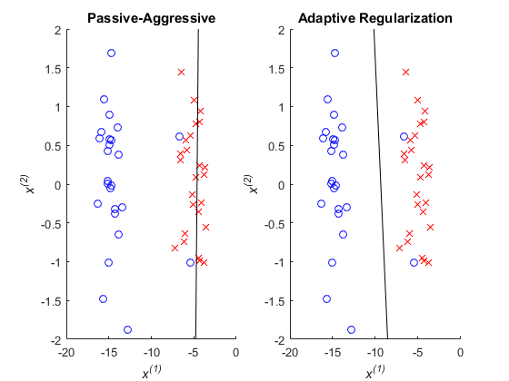

Example 15.2 Adaptive Regularization Classification
- Result in book : Figure 15.5
- Code in book : Figure 15.6
- Output : eg15_2.png
- Usage : eg15_2(), eg15_2(50)
Contents
Source Code
function eg15_2(n)
rng(0, 'v5uniform'); rng(0, 'v5normal');
if nargin < 1
n = 50;
end
x = [randn(1, n / 2) - 15, randn(1, n / 2) - 5; randn(1, n)]';
y = [ones(n / 2, 1); -ones(n / 2, 1)];
x(1 : 2, 1) = x(1 : 2, 1) + 10;
x(:, 3) = 1;
p = randperm(n);
x = x(p, :);
y = y(p);
t = zeros(3, 1);
l = 1;
figure('Name', 'Adaptive Regularization Classification Example'); clf;
for ii = 1 : length(x)
xi = x(ii, :)';
yi = y(ii);
t = t + yi * max(0, 1 - t' * xi * yi) / (xi' * xi + l) * xi;
end
subplot(1, 2, 1); hold on;
axis([-20 0 -2 2]);
plot(x(y == 1, 1), x(y == 1, 2), 'bo');
plot(x(y == -1, 1), x(y == -1, 2), 'rx');
plot([-20 0], -(t(3) + [-20 0] * t(1)) / t(2), 'k-');
setFigure('Passive-Aggressive');
mu = zeros(3, 1);
S = eye(3);
C = 1;
for ii = 1 : length(x)
xi = x(ii, :)';
yi = y(ii);
z = S * xi;
b = xi' * z + C;
m = yi * mu' * xi;
if m < 1
mu = mu + yi * (1 - m) * z / b;
S = S - z * z' / b;
end
end
subplot(1, 2, 2); hold on;
axis([-20 0 -2 2]);
plot(x(y == 1, 1), x(y == 1, 2), 'bo');
plot(x(y == -1, 1), x(y == -1, 2), 'rx');
plot([-20 0], -( mu(3) + [-20 0] * mu(1) ) / mu(2), 'k-');
setFigure('Adaptive Regularization');
saveas(gcf, 'eg15_2', 'png');
function [] = setFigure( tag )
title(tag);
xlabel('\itx^{(1)}');
ylabel('\itx^{(2)}');
end
end
